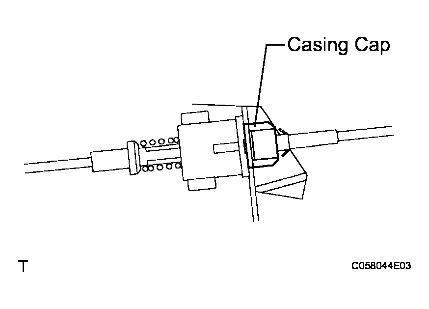
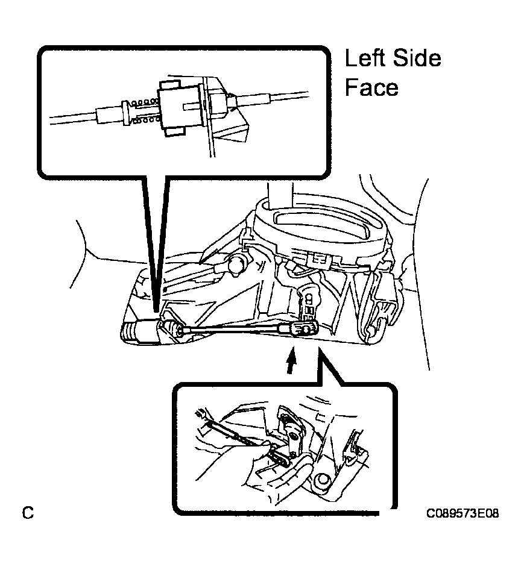

Floor Shift Parking Lock Cable Assembly: Replacement
WARNING: This page is about a different variant/trim than selected.
NOTE:
Be sure to read the precautionary notices concerning the SRS airbag system before servicing it.
- DISCONNECT CABLE FROM NEGATIVE BATTERY TERMINAL NOTE: Wait at least 90 seconds after disconnecting the cable from the negative (-) battery terminal to prevent airbag and seat belt pretensioner activation.
- PLACE FRONT WHEELS FACING STRAIGHT AHEAD
- REMOVE STEERING PAD ASSEMBLY
- Remove the steering pad (see REMOVAL ).
- REMOVE STEERING WHEEL ASSEMBLY
- Remove the steering wheel (see REMOVAL ).
- REMOVE STEERING COLUMN COVER
- Remove the steering column cover (see REMOVAL ).
- REMOVE INSTRUMENT CLUSTER FINISH PANEL
- Remove the instrument cluster finish panel (see REMOVAL ).
- REMOVE INSTRUMENT CLUSTER FINISH PANEL SUB-ASSEMBLY LOWER CENTER
- Remove the instrument cluster finish panel (see REMOVAL ).
- REMOVE CONSOLE BOX REAR COVER
- REMOVE CONSOLE BOX CARPET
- REMOVE REAR CONSOLE BOX ASSEMBLY
- Remove the rear console box (See REMOVAL ).
- DISCONNECT FLOOR SHIFT PARKING LOCK CABLE ASSEMBLY
- Rotate the adjust lock cap clockwise 90°so that it faces the front of the vehicle, and release it.
- Push the claw and disconnect the floor shift parking lock cable from the shift lock release link.
- Using a screwdriver, disconnect the floor shift parking lock cable from the shift lever plate.
- Disconnect the cable clamp.
- Adjust the shift lever to the N position.
- Disconnect the floor shift parking lock cable from the upper bracket.
- CONNECT FLOOR SHIFT PARKING LOCK CABLE ASSEMBLY
- Turn the ignition switch to the ACC or ON position.
- Connect the cable to the upper bracket.
HINT:
After installation, make sure that the lever pin is pulled by the cable and is stopped with the stopper.
- Connect the cable clamp.
- Move the shift lever to the N position.
- Insert the floor shift parking lock cable end rod in the slit of the shift lever plate.
- Insert the casing cap of the cable into the shift lever plate through-hole.

Courtesy of © TOYOTA, LICENSE AGREEMENT TMS1002HINT:
Check that it is inserted securely.
- Insert the lever pin into the hole in the floor shift parking lock cable end.

Courtesy of © TOYOTA, LICENSE AGREEMENT TMS1002HINT:
- At this time, ensure that the shift lever is in the N position.
- After installation, make sure that the lever pin is pulled by the floor shift parking lock cable and is stopped with the stopper.
- Hold the slide cap and move it back and forth. Check that the spring for automatic adjustment works properly.
- Rotate the adjust lock cap counterclockwise by 90° so that it faces the front of the vehicle, and attach it.
HINT:
- Install the floor shift parking lock cable on the shift lever side with the ignition switch in the ACC position.
- Make sure the slide amount of the spring for automatic adjustment is 8 mm (0.31 in.).
- INSTALL REAR CONSOLE BOX ASSEMBLY
- Install the rear console box (See INSTALLATION ).
- INSTALL CONSOLE BOX CARPET
- INSTALL CONSOLE BOX REAR COVER
- INSTALL INSTRUMENT CLUSTER FINISH PANEL SUB-ASSEMBLY LOWER CENTER
- Install the instrument cluster finish panel sub-assembly lower center (see INSTALLATION ).
- INSTALL INSTRUMENT CLUSTER FINISH PANEL
- Install the instrument cluster finish panel (See INSTALLATION ).
- INSTALL STEERING COLUMN COVER
- Install the steering column cover (see INSTALLATION ).
- INSTALL STEERING WHEEL ASSEMBLY
- Install the steering wheel (see INSTALLATION ).
- INSTALL STEERING PAD ASSEMBLY
- Install the steering pad (see INSTALLATION ).
- CONNECT CABLE TO NEGATIVE BATTERY TERMINAL
- INSPECT STEERING PAD ASSEMBLY
- Inspect the steering pad (see ON-VEHICLE INSPECTION ).
- INSPECT SRS WARNING LIGHT
- Inspect the SRS warning light (see PROBLEM SYMPTOMS TABLE ).
- CHECK KEY INTERLOCK OPERATION
- Check the key interlock operation (see ON-VEHICLE INSPECTION ).